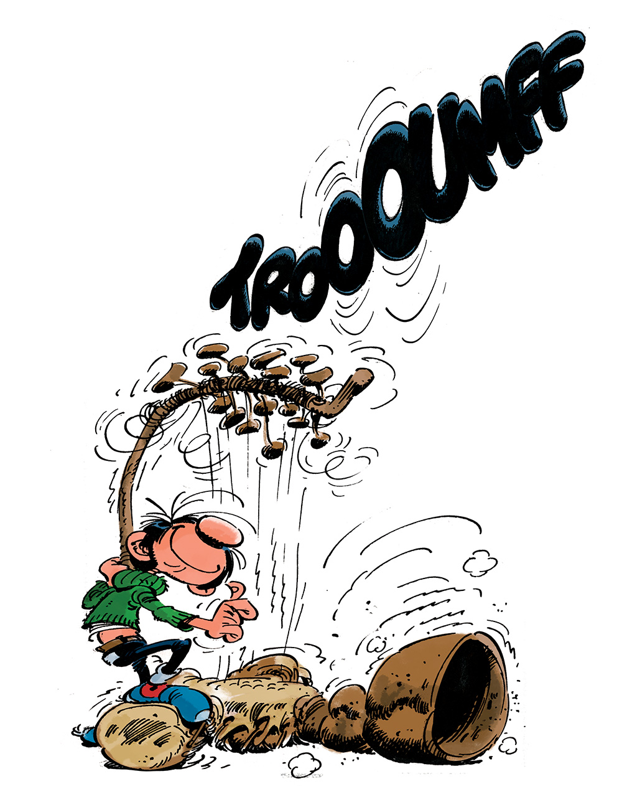

Le dernier tome de la Culture est sorti en 2012, soit vingt-cinq ans après ses débuts et un an avant le décès prématuré de son auteur Iain M. Banks. J’ai picoré le cycle, dont les onze livres (dix romans et un recueil de nouvelles) peuvent se lire indépendamment les uns des autres, sur un peu moins d’une décennie. Et puis voilà. J’ai pris mon temps, mais me voilà au bout de ce space-opera d’espionnage à tendance anarchiste.
On y retrouve la galaxie à laquelle nous sommes habitués : grouillante d’espèces et de civilisations qui se côtoient avec plus ou moins de bonheur. Parmi elles, la Culture, une vaste société aussi pacifique que puissante. Il y a déjà bien longtemps que sa direction a été laissée aux Mentaux, les intelligences artificielles des gigantesques vaisseaux et autres habitats spatiaux qui abritent l’essentiel de sa population.
La sonate hydrogène se concentre sur un concept déjà croisé dans d’autres tomes : celui de la Sublimation. En gros, quand une civilisation estime qu’elle a assez vécu, elle peut collectivement décider de quitter le réel et de se “sublimer”. Personne ne sait vraiment ce que c’est, à part que ça a l’air super. Ici, ce sont les Gziltes qui vont bientôt faire le grand saut. Normalement, il s’agit d’un moment solennel, mais l’explosion d’un vaisseau ami qui venait rendre ses hommages complique les choses. Ainsi, certains Mentaux de la Culture se posent des questions, au nombre desquelles : mais que transportait ce vaisseau disparu pour susciter tant de remous ?

On suit en particulier Vyr Cossont, une musicienne gzilte. Elle joue du onzecorde, un instrument massif (quelque part entre l’octobasse et le gaffophone) conçu pour jouer la sonate qui donne son nom au roman : une oeuvre aussi difficile à jouer qu’à écouter, écrite pour un instrument encore à inventer du vivant de l’auteur. Il se trouve que Vyr a un jour rencontré un personnage mythique, évidemment introuvable, tellement âgé qu’il se souviendrait de l’émergence de la civilisation gzilte (et même de la naissance de la Culture). Et ça, vu les circonstances, ça attire l’attention. Et en parlant de circonstances, quid de Circonstances Spéciales, l’espèce de service de renseignements de la Culture ? Et bien apparemment ils s’en fichent.
J’ai bien sûr adoré ce livre. Les dialogues savoureux entre Mentaux m’ont rappelé ceux d’Excession et les paysages fantasques sans limites m’ont rappelé Le sens du vent ou Trames. Le ton reste généralement léger, mais ne se prive pas de moments de bravoure et d’instants dramatiques. L’intrigue, faite de viles bassesses politiques, de questionnements vertigineux et d’absurdités qui ne dépareraient pas dans Le Guide du Voyageur Galactique de Douglas Adams, réunit simplement ce qui se fait de mieux dans le cycle. Plus spécifiquement, j’ai noté un questionnement présent tout Tout au long du roman : qu’est-ce qu’être soi ? Qu’est-ce que ça implique, par exemple, pour qui se dédouble le temps d’une mission (la routine) ou pour qui est plus âgé qu’une civilisation ?
Je ne sais pas si Iain M. Banks en avait conscience lors de son écriture, mais La sonate hydrogène est donc pour toujours le dernier tome de la Culture. Que cela ait été pensé comme tel ou non, il s’agit d’une très belle conclusion. J’en aurais voulu davantage, je voudrais toujours en avoir un autre quelque part en réserve, mais je me contenterai de les relire et ce sera déjà très bien.
Titre original : The Hydrogen Sonata / Sortie originale (anglais) : 2012 / Version française : 2013 (traduction : Patrick Dusoulier)